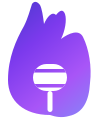

Спичка / ИнструкцияКак выбрать режим распознавания речи и подключить Яндекс API для максимального качества.
После установки Спичка не открывает никаких окон — она живёт в системном трее (область уведомлений в правом нижнем углу экрана, рядом с часами).
Шаг 1. Посмотрите в правый нижний угол экрана. Если иконка микрофона не видна — нажмите кнопку «^» чтобы показать скрытые иконки.
Шаг 2. Нажмите на иконку правой кнопкой мыши — откроется меню управления.
| Пункт | Описание |
|---|---|
| Спичка ▶ зажми [right ctrl] | Напоминание как пользоваться: зажмите правый Ctrl, говорите, отпустите — текст вставится автоматически |
| Mode | Выбор режима распознавания: Offline First (сначала Whisper) или Online First (сначала Яндекс). Подробнее — в разделе 3 ниже |
| Настройки | Открывает окно настроек: горячая клавиша, Яндекс API ключи, включение автозапуска |
| История | Последние диктовки — нажмите на любую чтобы скопировать полный текст в буфер обмена |
| Лицензия | Статус активации: ✓ Активирована или ✗ Не активирована |
| Ввести ключ активации | Открывает диалог для ввода лицензионного ключа. Ключ приходит на почту после оплаты |
| Open log | Открывает файл с логами работы — полезно если что-то пошло не так |
| Open config | Открывает файл настроек напрямую для продвинутых пользователей |
| Версия X.X.X | Текущая версия приложения. Если доступно обновление — здесь появится кнопка «Скачать» |
| Exit | Завершить работу Спички |
Спичка умеет распознавать речь двумя способами. Вы сами выбираете, какой использовать — в любой момент через настройки.
Помимо распознавания, Спичка использует YandexGPT для полировки текста — убирает слова-паразиты, расставляет знаки препинания, делает речь письменной. Это тоже работает через Яндекс API.
В настройках Спички два режима — переключить можно в любой момент через правый клик по иконке в трее → Mode.
Сначала Whisper, Яндекс как запасной. Подходит если интернет есть не всегда, или вы ещё не подключили Яндекс API. Работает сразу после установки.
Сначала Яндекс, Whisper как запасной. Рекомендуется если Яндекс API подключён — получите лучшее качество при наличии интернета. Если связь пропадёт, Whisper подхватит автоматически.
Спичка работает и без этого шага — Whisper распознаёт речь прямо на вашем компьютере, без интернета. Яндекс API даёт более высокое качество, но подключать его не обязательно.
Если решите подключить — нужно получить два значения: API-ключ и ID каталога. Это займёт около 10 минут.
Зайти на console.yandex.cloud и войти через обычный аккаунт на Яндексе. При первом входе предложат создать платёжный аккаунт — выбрать Физическое лицо, привязать карту для верификации (деньги сразу не снимаются).
В консоли слева нажать на свой каталог (по умолчанию называется «default»). ID будет виден в свойствах — строка вида:
Скопировать — это понадобится в конце.
В левом меню консоли: IAM → Сервисные аккаунты. Открыть свой аккаунт → вкладка API-ключи → Создать API-ключ.
Ключ покажут один раз — сразу скопировать. Выглядит так:
Правый клик по иконке Спички в трее → Настройки.
Вставить:
AQVN...b1g...Нажать Сохранить.
Правый клик по иконке в трее → Mode → Online First. Теперь Яндекс будет основным движком. Если интернет пропадёт — Спичка автоматически переключится на Whisper.